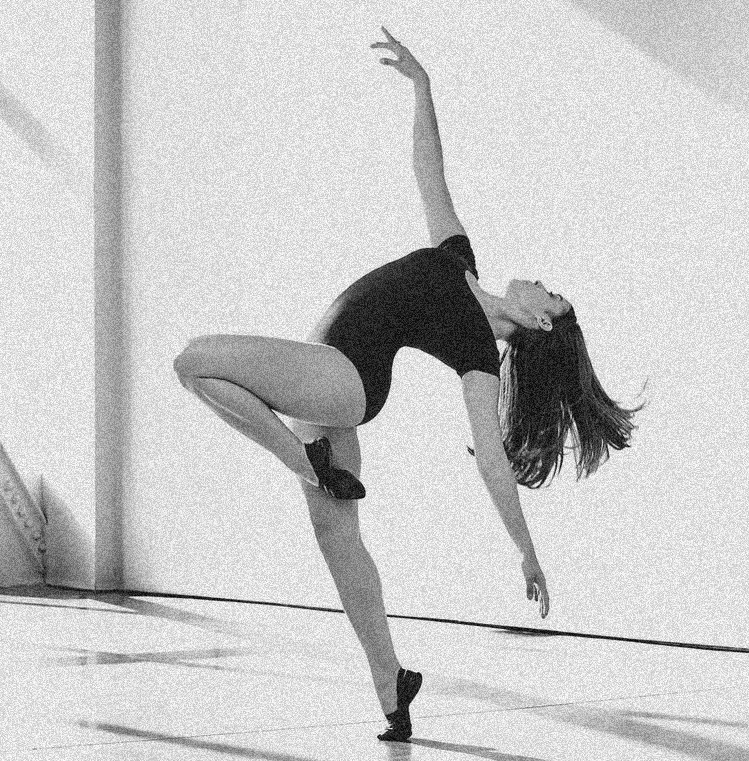
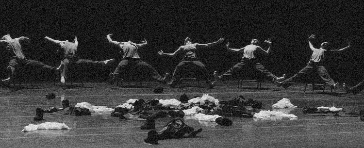
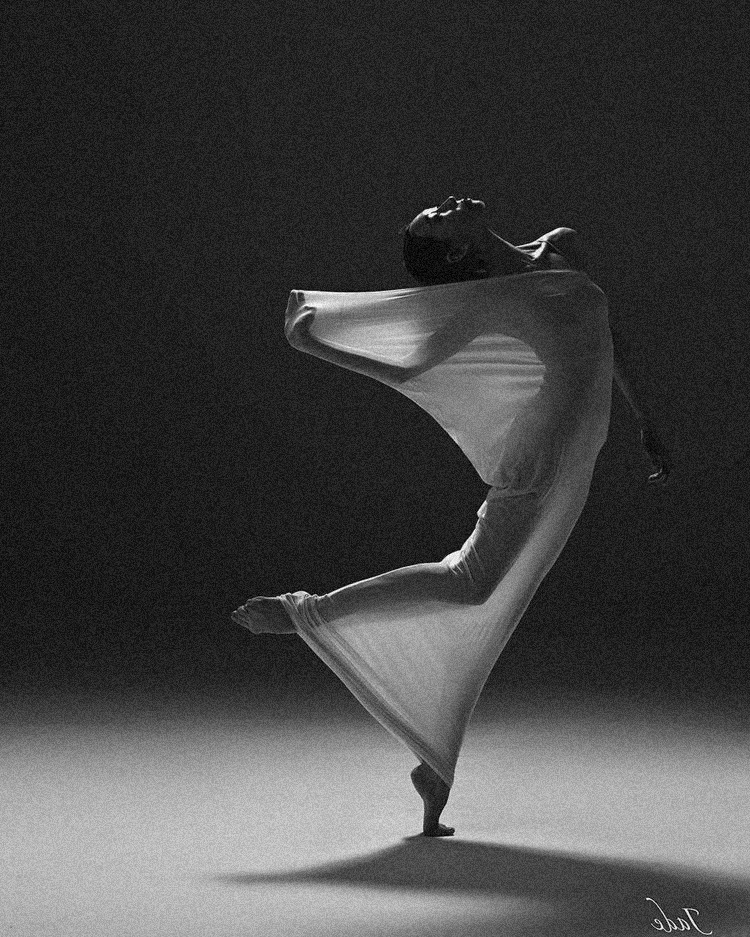

Сценические стили
- Contemporary (Контемпорари) Contemporary – дословно означает «современный танец». На сегодняшний день он является одним из самых популярных танцевальных направлений современной хореографии. Контемп является очень чувственным, эмоциональным, пластичным и эффектным. Направление берёт своё начало с таких танцевальных направлений как модерн, джаз-модерн, постмодерн и в своей технике избегает чётко обозначенных движений классического балета (хотя и использует его принципы). В хореографии самого танца встречаются элементы как западных танцевальных направлений (модерн, джаз, эстрадные и народные танцы, классический балет), так и восточных техник и культур (йога, элементы боевых искусств). Одной же из главных идей контемпа является возможность танцора отойти от классических догм хореографии и выразить себя с помощью «свободного» танца. Отсутствие рамок открывает людям бескрайние горизонты для самовыражения в танце, дарит потрясающие физические возможности.
- Jazz Modern (Джаз-модерн)  Jazz Modern – один из самых популярных танцев «классического» направления появился в США в знак протеста канонам балета. Стиль стал реакцией на классический танец со строгими формами, ритмами и движениями. Танцовщики устали от балета, а новый, быстро менявшийся, мир, требовал современного, свободного и пластичного танца с иными темами. При этом в движениях этого стиля во многом просматривается та классическая основа, на которой он был создан. Стиль сочетает в себе резкие прыжки, замедление, ускорение, падения на пол (партерные движения) и поддержки (контактная импровизация).
- Postmodern (постмодерн) Постмодерн ― сценический танец, получивший широкое распространение в начале 1960-х годов. Хореография танца была вдохновлена идеями постмодернизма и стремилась отвергнуть хореографию танца модерна, который, по мнению постмодернистов, казался слишком претенциозным. Таким образом, балет постмодерна является отходом от модернистских идеалов. 
- Experimental (Экспериментал)  Experimental — это экспериментальный танец, который подразумевает под собой поиск собственного стиля, в большей или меньшей мере отличающегося от остальных. Для экспериментальной хореографии использвуется нестандартная музыка, отличающаяся своеобразными ритмами с вклинивающимися необычными звуками, которые танцор в свою очередь обыгрывает движениями. Танец экспериментал основан на импровизации и на очень чутком понимании музыки и всего окружающего пространства. Экспериментал — это новый стиль, который очень долго не воспринимался сообществом танцоров, но растущее количество почитателей данного направления сделало свое дело.